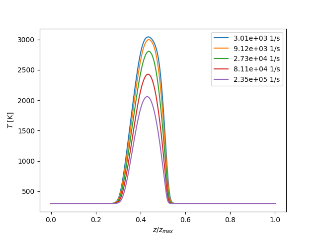

Note
Go to the end to download the full example code.
Scaling of diffusion flames with pressure and strain rate#
This example creates two batches of counterflow diffusion flame simulations. The first batch computes counterflow flames at increasing pressure, the second at increasing strain rates.
The tutorial makes use of the scaling rules derived by Fiala and Sattelmayer (doi:10.1155/2014/484372). Please refer to this publication for a detailed explanation. Also, please dont forget to cite it if you make use of it.
This example can, for example, be used to iterate to a counterflow diffusion flame to an awkward pressure and strain rate, or to create the basis for a flamelet table.
Requires: cantera >= 3.0, matplotlib >= 2.0
from pathlib import Path
import numpy as np
import matplotlib.pyplot as plt
import cantera as ct
class FlameExtinguished(Exception):
pass
Initialization#
Set up an initial hydrogen-oxygen counterflow flame at 1 bar and low strain rate (maximum axial velocity gradient = 2414 1/s)
reaction_mechanism = 'h2o2.yaml'
gas = ct.Solution(reaction_mechanism)
width = 18e-3 # 18mm wide
f = ct.CounterflowDiffusionFlame(gas, width=width)
# Define the operating pressure and boundary conditions
f.P = 1.e5 # 1 bar
f.fuel_inlet.mdot = 0.5 # kg/m^2/s
f.fuel_inlet.X = 'H2:1'
f.fuel_inlet.T = 300 # K
f.oxidizer_inlet.mdot = 3.0 # kg/m^2/s
f.oxidizer_inlet.X = 'O2:1'
f.oxidizer_inlet.T = 300 # K
# Set refinement parameters, if used
f.set_refine_criteria(ratio=3.0, slope=0.1, curve=0.2, prune=0.03)
Define a limit for the maximum temperature below which the flame is considered as extinguished and the computation is aborted This increases the speed of refinement, if enabled
temperature_limit_extinction = 900 # K
def interrupt_extinction(t):
if np.max(f.T) < temperature_limit_extinction:
raise FlameExtinguished('Flame extinguished')
return 0.
f.set_interrupt(interrupt_extinction)
Initialize and solve
print('Creating the initial solution')
f.solve(loglevel=0, auto=True)
# Define output locations
output_path = Path() / "diffusion_flame_batch_data"
output_path.mkdir(parents=True, exist_ok=True)
hdf_output = "native" in ct.hdf_support()
if hdf_output:
file_name = output_path / "flame_data.h5"
file_name.unlink(missing_ok=True)
def names(test):
if hdf_output:
# use internal container structure for HDF
file_name = output_path / "flame_data.h5"
return file_name, test
# use separate files for YAML
file_name = output_path / f"{test}.yaml".replace("-", "_").replace("/", "_")
return file_name, "solution"
# Save to data directory
file_name, entry = names("initial-solution")
desc = "Initial hydrogen-oxygen counterflow flame at 1 bar and low strain rate"
f.save(file_name, name=entry, description=desc, overwrite=True)
Creating the initial solution
Batch Pressure Loop#
Compute counterflow diffusion flames over a range of pressures
# Arbitrarily define a pressure range (in bar)
p_range = np.round(np.logspace(0, 2, 50), decimals=1)
Exponents for the initial solution variation with changes in pressure Taken from Fiala and Sattelmayer (2014). The exponents are adjusted such that the strain rates increases proportional to \(p^{3/2}\), which results in flames similar with respect to the extinction strain rate.
exp_d_p = -5. / 4.
exp_u_p = 1. / 4.
exp_V_p = 3. / 2.
exp_lam_p = 4.
exp_mdot_p = 5. / 4.
# The variable p_previous (in bar) is used for the pressure scaling
p_previous = f.P / 1.e5
# Iterate over the pressure range
for p in p_range:
print('pressure = {0} bar'.format(p))
# set new pressure
f.P = p * 1.e5
# Create an initial guess based on the previous solution
rel_pressure_increase = p / p_previous
# Update grid
f.flame.grid *= rel_pressure_increase ** exp_d_p
normalized_grid = f.grid / (f.grid[-1] - f.grid[0])
# Update mass fluxes
f.fuel_inlet.mdot *= rel_pressure_increase ** exp_mdot_p
f.oxidizer_inlet.mdot *= rel_pressure_increase ** exp_mdot_p
# Update velocities
f.set_profile('velocity', normalized_grid,
f.velocity * rel_pressure_increase ** exp_u_p)
f.set_profile('spread_rate', normalized_grid,
f.spread_rate * rel_pressure_increase ** exp_V_p)
# Update pressure curvature
f.set_profile('lambda', normalized_grid,
f.L * rel_pressure_increase ** exp_lam_p)
try:
# Try solving the flame
f.solve(loglevel=0)
file_name, entry = names(f"pressure-loop/{p:05.1f}")
f.save(file_name, name=entry, description=f"pressure = {p} bar",
overwrite=True)
p_previous = p
except ct.CanteraError as e:
print('Error occurred while solving:', e, 'Try next pressure level')
# If solution failed: Restore the last successful solution and continue
f.restore(file_name, name=entry)
pressure = 1.0 bar
pressure = 1.1 bar
pressure = 1.2 bar
pressure = 1.3 bar
pressure = 1.5 bar
pressure = 1.6 bar
pressure = 1.8 bar
pressure = 1.9 bar
pressure = 2.1 bar
pressure = 2.3 bar
pressure = 2.6 bar
pressure = 2.8 bar
pressure = 3.1 bar
pressure = 3.4 bar
pressure = 3.7 bar
pressure = 4.1 bar
pressure = 4.5 bar
pressure = 4.9 bar
pressure = 5.4 bar
pressure = 6.0 bar
pressure = 6.6 bar
pressure = 7.2 bar
pressure = 7.9 bar
pressure = 8.7 bar
pressure = 9.5 bar
pressure = 10.5 bar
pressure = 11.5 bar
pressure = 12.6 bar
pressure = 13.9 bar
pressure = 15.3 bar
pressure = 16.8 bar
pressure = 18.4 bar
pressure = 20.2 bar
pressure = 22.2 bar
pressure = 24.4 bar
pressure = 26.8 bar
pressure = 29.5 bar
pressure = 32.4 bar
pressure = 35.6 bar
pressure = 39.1 bar
pressure = 42.9 bar
pressure = 47.1 bar
pressure = 51.8 bar
pressure = 56.9 bar
pressure = 62.5 bar
pressure = 68.7 bar
pressure = 75.4 bar
pressure = 82.9 bar
pressure = 91.0 bar
pressure = 100.0 bar
Strain Rate Loop#
Compute counterflow diffusion flames at increasing strain rates at 1 bar The strain rate is assumed to increase by 25% in each step until the flame is extinguished
strain_factor = 1.25
Exponents for the initial solution variation with changes in strain rate. Taken from Fiala and Sattelmayer (2014).
exp_d_a = - 1. / 2.
exp_u_a = 1. / 2.
exp_V_a = 1.
exp_lam_a = 2.
exp_mdot_a = 1. / 2.
# Restore initial solution
file_name, entry = names("initial-solution")
f.restore(file_name, name=entry)
# Counter to identify the loop
n = 0
# Do the strain rate loop
while np.max(f.T) > temperature_limit_extinction:
n += 1
print('strain rate iteration', n)
# Create an initial guess based on the previous solution
# Update grid
f.flame.grid *= strain_factor ** exp_d_a
normalized_grid = f.grid / (f.grid[-1] - f.grid[0])
# Update mass fluxes
f.fuel_inlet.mdot *= strain_factor ** exp_mdot_a
f.oxidizer_inlet.mdot *= strain_factor ** exp_mdot_a
# Update velocities
f.set_profile('velocity', normalized_grid,
f.velocity * strain_factor ** exp_u_a)
f.set_profile('spread_rate', normalized_grid,
f.spread_rate * strain_factor ** exp_V_a)
# Update pressure curvature
f.set_profile('lambda', normalized_grid, f.L * strain_factor ** exp_lam_a)
try:
# Try solving the flame
f.solve(loglevel=0)
file_name, entry = names(f"strain-loop/{n:02d}")
f.save(file_name, name=entry,
description=f"strain rate iteration {n}", overwrite=True)
except FlameExtinguished:
print('Flame extinguished')
break
except ct.CanteraError as e:
print('Error occurred while solving:', e)
break
strain rate iteration 1
strain rate iteration 2
strain rate iteration 3
strain rate iteration 4
strain rate iteration 5
strain rate iteration 6
strain rate iteration 7
strain rate iteration 8
strain rate iteration 9
strain rate iteration 10
strain rate iteration 11
strain rate iteration 12
strain rate iteration 13
strain rate iteration 14
strain rate iteration 15
strain rate iteration 16
strain rate iteration 17
strain rate iteration 18
strain rate iteration 19
strain rate iteration 20
strain rate iteration 21
strain rate iteration 22
strain rate iteration 23
strain rate iteration 24
strain rate iteration 25
strain rate iteration 26
Flame extinguished
Plotting Results#
fig1 = plt.figure()
fig2 = plt.figure()
ax1 = fig1.add_subplot(1, 1, 1)
ax2 = fig2.add_subplot(1, 1, 1)
p_selected = p_range[::7]
for p in p_selected:
file_name, entry = names(f"pressure-loop/{p:05.1f}")
f.restore(file_name, name=entry)
# Plot the temperature profiles for selected pressures
ax1.plot(f.grid / f.grid[-1], f.T, label=f"{p:05.1f} bar")
# Plot the axial velocity profiles (normalized by the fuel inlet velocity)
# for selected pressures
ax2.plot(f.grid / f.grid[-1], f.velocity / f.velocity[0], label=f"{p:05.1f} bar")
ax1.legend(loc=0)
ax1.set_xlabel(r'$z/z_{max}$')
ax1.set_ylabel(r'$T$ [K]')
fig1.savefig(output_path / "figure_T_p.png")
ax2.legend(loc=0)
ax2.set_xlabel(r'$z/z_{max}$')
ax2.set_ylabel(r'$u/u_f$')
fig2.savefig(output_path / "figure_u_p.png")
plt.show()
fig3 = plt.figure()
fig4 = plt.figure()
ax3 = fig3.add_subplot(1, 1, 1)
ax4 = fig4.add_subplot(1, 1, 1)
n_selected = range(1, n, 5)
for n in n_selected:
file_name, entry = names(f"strain-loop/{n:02d}")
f.restore(file_name, name=entry)
a_max = f.strain_rate('max') # the maximum axial strain rate
# Plot the temperature profiles for the strain rate loop (selected)
ax3.plot(f.grid / f.grid[-1], f.T, label=f"{a_max:.2e} 1/s")
# Plot the axial velocity profiles (normalized by the fuel inlet velocity)
# for the strain rate loop (selected)
ax4.plot(f.grid / f.grid[-1], f.velocity / f.velocity[0], label=f"{a_max:.2e} 1/s")
ax3.legend(loc=0)
ax3.set_xlabel(r'$z/z_{max}$')
ax3.set_ylabel(r'$T$ [K]')
fig3.savefig(output_path / "figure_T_a.png")
ax4.legend(loc=0)
ax4.set_xlabel(r'$z/z_{max}$')
ax4.set_ylabel(r'$u/u_f$')
fig4.savefig(output_path / "figure_u_a.png")
plt.show()
- 
Total running time of the script: (0 minutes 5.220 seconds)